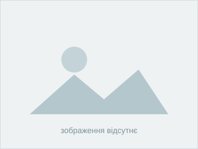

Catalyst 2960-X 24  Категорія: Комутатори Виробник: Cisco Кількість портів: 24 Пропускна здатність: 1 Гбіт/с керований L2 стекування PoE+ Детальніше про Cisco Catalyst 2960-X 24
hEX RB750Gr3 Категорія: Маршрутизатори Виробник: MikroTik Кількість портів: 5 Пропускна здатність: 1 Гбіт/с RouterOS SOHO бюджетний Детальніше про MikroTik hEX RB750Gr3
UniFi U6-Lite Категорія: Точки доступу Виробник: Ubiquiti Кількість портів: 1 Пропускна здатність: 1 Гбіт/с Wi-Fi 6 стельова централізоване керування Детальніше про Ubiquiti UniFi U6-Lite
FortiGate 60F Категорія: Мережеві екрани Виробник: Fortinet Кількість портів: 10 Пропускна здатність: 10 Гбіт/с NGFW VPN фільтрація трафіку Детальніше про Fortinet FortiGate 60F
CRS326-24G-2S+ Категорія: Комутатори Виробник: MikroTik Кількість портів: 26 Пропускна здатність: 10 Гбіт/с SFP+ L3 керований Детальніше про MikroTik CRS326-24G-2S+
ISR 1111-8P Категорія: Маршрутизатори Виробник: Cisco Кількість портів: 9 Пропускна здатність: 1 Гбіт/с філія VPN вбудований комутатор Детальніше про Cisco ISR 1111-8P